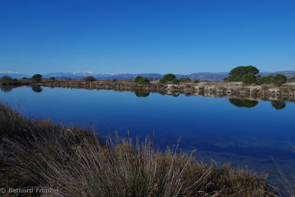
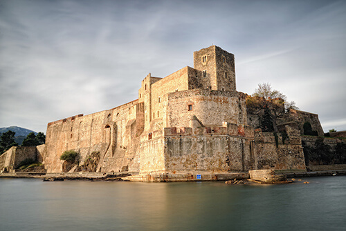
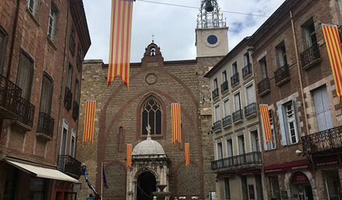
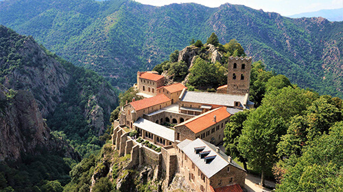
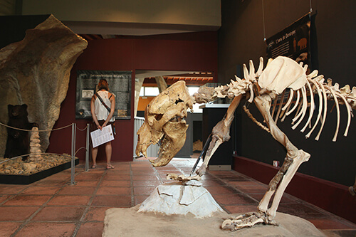

Accueil
Actualités
Marchés foires
Lieux Incontournables
Sentier du Littoral
Fort Saint-Elme
Site Naturel des Dosses

Chateau Royale de Collioure

Canyoning Park
Cathédrale Saint-Jean

Lac des Bouillouses
Musée d'art Hyacinthe Rigaud
Abbaye Saint-Martin du CANIGÓ

Musée de la Préhistoire de Tautavel
